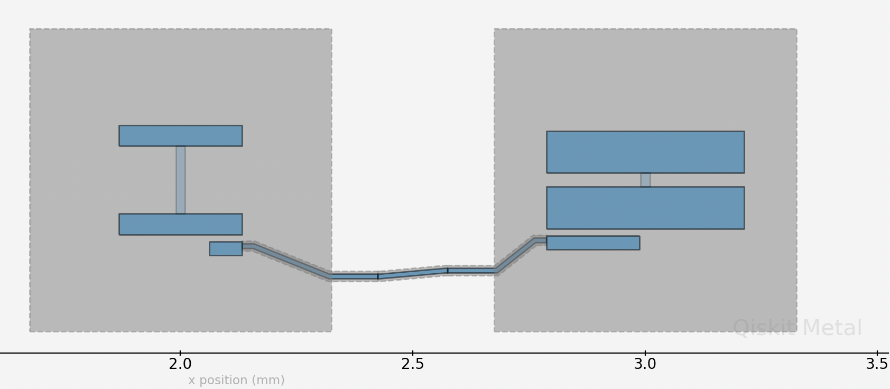

Note
This page was generated from tut/4-Analysis/4.04-New-LOM-and-Fluxonium-Example.ipynb.
4.04 New LOM and Fluxonium Example¶
💡 Using this tutorial without the Qt GUI
This tutorial uses the desktop
MetalGUI. To follow along on Colab, Binder, JupyterHub, or any environment where Qt isn’t available, replace any ``gui.rebuild()`` / ``gui.screenshot()`` call with ``qm.view(design)`` — it renders the design to a matplotlibFigureyou can display inline or save withfig.savefig(...).See 1.1 Quick start for a complete runnable walkthrough and
`docs/headless-usage.rst<../../docs/headless-usage.rst>`__ for the full reference.
1. load fluxonium cell Q3d simulation results¶
Loading the Maxwell capacitance matrices for the design as shown in the screenshot below:

where we have a transmon coupled to a fluxonium through a direct coupler.
For a simple introduction on Maxwell capacitance matrix, check out the following resources: https://www.fastfieldsolvers.com/Papers/The_Maxwell_Capacitance_Matrix_WP110301_R02.pdf
[3]:
path = "./Fluxonium_8p5MHz_cmat.txt"
flux_mat, _, _, _ = load_q3d_capacitance_matrix(path)
Imported capacitance matrix with UNITS: [fF] now converted to USER UNITS:[fF] from file:
./Fluxonium_8p5MHz_cmat.txt
| ground_main_plane | pad_bot_Q1 | pad_top_Q1 | coupling_pad_Q1 | |
|---|---|---|---|---|
| ground_main_plane | 149.81 | -24.45 | -27.87 | -35.54 |
| pad_bot_Q1 | -24.45 | 40.31 | -5.38 | -8.51 |
| pad_top_Q1 | -27.87 | -5.38 | 36.66 | -1.23 |
| coupling_pad_Q1 | -35.54 | -8.51 | -1.23 | 46.36 |
load transmon cell Q3d simulation results¶
[4]:
path = "./Transmon_5p5GHz_fQ_cmat.txt"
transmon_mat, _, _, _ = load_q3d_capacitance_matrix(path)
Imported capacitance matrix with UNITS: [fF] now converted to USER UNITS:[fF] from file:
./Transmon_5p5GHz_fQ_cmat.txt
| ground_main_plane | pad_bot_Q2 | pad_top_Q2 | coupling_pad_Q2 | |
|---|---|---|---|---|
| ground_main_plane | 179.08 | -38.07 | -44.06 | -36.24 |
| pad_bot_Q2 | -38.07 | 91.64 | -31.54 | -19.11 |
| pad_top_Q2 | -44.06 | -31.54 | 81.23 | -2.32 |
| coupling_pad_Q2 | -36.24 | -19.11 | -2.32 | 58.75 |
2. Create LOM cells from capacitance matrices¶
Setting cell objects corresponding to the capacitance simulation results¶
coupler_pad_Q1 and coupler_pad_Q2 refer to the same node corresponding to the direct coupler between the qubits but are different names in the capacitance matrix results file. In order to merge the two capacitance matrices in the LOM analysis, we need to rename them to be the same name.
The following three parameters, ind_dict, jj_dict, cj_dict, all have the same structure. Each is a dictionary where the keys are tuples, giving the nodes that a junction is in between, and the values specifying the relevant values associated with the junction. ind_dict lets you specify the junction inductance in nH; jj_dict specifies the Josephson junction name (you can give the junction any name you wish; just need to be consistent with the name); cj_dict specifies the
junction capacitance in fF. In the case of the fluxonium, we will set \(E_j\) and \(E_l\) directly later instead of deriving from the junction inductance; and since we are only concerned with capacitive coupling here (what’s currently supported), ind_dict can just be a placeholder whose actual value is not important.
[5]:
# cell 1
opt1 = dict(
node_rename={"coupling_pad_Q1": "coupling"},
cap_mat=flux_mat,
ind_dict={
("pad_bot_Q1", "pad_top_Q1"): 1
}, # placeholder inductance here; only used for node-basis transformation and reduction
jj_dict={("pad_bot_Q1", "pad_top_Q1"): "j1"},
)
cell_1 = Cell(opt1)
# cell 2
opt2 = dict(
node_rename={"coupling_pad_Q2": "coupling"},
cap_mat=transmon_mat,
ind_dict={("pad_bot_Q2", "pad_top_Q2"): 12.31},
jj_dict={("pad_bot_Q2", "pad_top_Q2"): "j2"},
)
cell_2 = Cell(opt2)
3. Create subsystems¶
Creating the four subsystems, corresponding to the 2 qubits¶
Subsystem takes three required arguments. The four currently supported system types are TRANSMON, FLUXONIUM, TL_RESONATOR (transmission line resonator) and LUMPED_RESONATOR. nodes lets you specify which node the subsystem should be mapped to in the cells. They should be consistent with the node names you have given previously. q_opts lets specify any optional parameters you want to give. For example, for the fluxonium, you can provide scqubits parameters such as
EJ, EL and flux here.
[6]:
# subsystem 1: fluxonium
fluxonium = Subsystem(
name="fluxonium",
sys_type="FLUXONIUM",
nodes=["j1"],
q_opts={"EJ": 4860, "EL": 1140, "flux": 0.5},
)
# subsystem 2: transmon
transmon = Subsystem(
name="transmon",
sys_type="TRANSMON",
nodes=["j2"],
q_opts={"ncut": 150, "truncated_dim": 10},
)
4. Creat the composite system from the cells and the subsystems¶
[7]:
composite_sys = CompositeSystem(
subsystems=[fluxonium, transmon],
cells=[cell_1, cell_2],
grd_node="ground_main_plane",
)
The circuitGraph object encapsulates the lumped model circuit analysis (i.e., LOM analysis) and contain the intermediate as well as final L and C matrices, their inverses needed to construct the Hamiltonian of the composite system. For more details on the meaning and calculation of these matrices, check out https://arxiv.org/pdf/2103.10344.pdf.
Just to note that you can use the analysis without needing to know any detail about this object.
[8]:
cg = composite_sys.circuitGraph()
print(cg)
node_jj_basis:
-------------
['j1', 'pad_top_Q1', 'j2', 'pad_top_Q2', 'coupling']
nodes_keep:
-------------
['j1', 'j2']
L_inv_k (reduced inverse inductance matrix):
-------------
j1 j2
j1 1.0 0.000000
j2 0.0 0.081235
C_k (reduced capacitance matrix):
-------------
j1 j2
j1 21.769175 -0.249771
j2 -0.249771 58.195757
5. Generate the hilberspace from the composite system, leveraging the scqubits package¶
add_interaction() adds the interaction terms between the subsystems. Currently, capacitive coupling is supported (which is extracted by from off-diagonal elements in the C matrices, see eqn 12, 13 in https://arxiv.org/pdf/2103.10344.pdf ) and contribute to the interaction.
[9]:
hilbertspace = composite_sys.create_hilbertspace()
hilbertspace = composite_sys.add_interaction()
print(hilbertspace)
HilbertSpace: subsystems
-------------------------
Fluxonium-----------| [Fluxonium_2]
| EJ: 4860
| EC: 889.8446188934637
| EL: 1140
| flux: 0.5
| cutoff: 110
| truncated_dim: 10
|
| dim: 110
Transmon------------| [Transmon_2]
| EJ: 13268.052221700449
| EC: 332.86246955931534
| ng: 0.001
| ncut: 150
| truncated_dim: 10
|
| dim: 301
HilbertSpace: interaction terms
--------------------------------
InteractionTerm----------| [Interaction_1]
| g_strength: 30.55305654441268
| operator_list: [(0, array([[ 0.+0.j , -0.-0.44731161j, 0. ...
| add_hc: False
6. Print the results¶
Print the calculated Hamiltonian parameters from diagonalized composite system Hamiltonian.
The diagonal elements of the \(\chi\) matrix are the anharmonicities of the respective subsystems and the off-diagonal the dispersive shifts between them.
[10]:
hamiltonian_results = composite_sys.hamiltonian_results(hilbertspace, evals_count=30)
system frequencies in GHz:
--------------------------
{'fluxonium': 0.3601817511883073, 'transmon': 5.588755492262991}
Chi matrices in MHz
--------------------------
fluxonium transmon
fluxonium 3293.889799 0.450799
transmon 0.450799 -391.691365
[11]:
hamiltonian_results["chi_in_MHz"].to_dataframe()
[11]:
| fluxonium | transmon | |
|---|---|---|
| fluxonium | 3293.889799 | 0.450799 |
| transmon | 0.450799 | -391.691365 |
The \(\chi\)’s between the subsystems are based on the coupling strengths, \(\it{g}\)’s between them (which are computed using the coupling capacitance (currently capacitive coupling is supported) and zero point fluctuations of the subsystem’s charge operator at the coupling location)
[12]:
composite_sys.compute_gs()
[12]:
j1 j2
j1 0.000000 30.553057
j2 30.553057 0.000000
[13]:
fluxonium.h_params
[13]:
defaultdict(dict,
{'j1': {'EJ': 4860,
'EC': 889.8446188934637,
'EL': 1140,
'flux': 0.5,
'Q_zpf': 3.20435314e-19,
'default_charge_op': Operator(op=array([[ 0.+0.j , -0.-0.44731161j, 0.+0.j , ...,
0.+0.j , 0.+0.j , 0.+0.j ],
[ 0.+0.44731161j, 0.+0.j , -0.-0.63259415j, ...,
0.+0.j , 0.+0.j , 0.+0.j ],
[ 0.+0.j , 0.+0.63259415j, 0.+0.j , ...,
0.+0.j , 0.+0.j , 0.+0.j ],
...,
[ 0.+0.j , 0.+0.j , 0.+0.j , ...,
0.+0.j , -0.-4.64859865j, 0.+0.j ],
[ 0.+0.j , 0.+0.j , 0.+0.j , ...,
0.+4.64859865j, 0.+0.j , -0.-4.67007035j],
[ 0.+0.j , 0.+0.j , 0.+0.j , ...,
0.+0.j , 0.+4.67007035j, 0.+0.j ]]), add_hc=False)}})
[14]:
transmon.h_params
[14]:
defaultdict(dict,
{'j2': {'EJ': 13268.052221700449,
'EC': 332.86246955931534,
'Q_zpf': 3.20435314e-19,
'default_charge_op': Operator(op=array([[-150, 0, 0, ..., 0, 0, 0],
[ 0, -149, 0, ..., 0, 0, 0],
[ 0, 0, -148, ..., 0, 0, 0],
...,
[ 0, 0, 0, ..., 148, 0, 0],
[ 0, 0, 0, ..., 0, 149, 0],
[ 0, 0, 0, ..., 0, 0, 150]]), add_hc=False)}})
7. let’s sweep some parameters now¶
Let’s sweep the flux from 0 to 1 in a grid of 100 points in unit of flux quantum using scQubits’s sweeping library.
[ ]:
_sys = hilbertspace.subsys_list[0] # fluxonium
def update_hilbertspace(param_val):
_sys.flux = param_val
param_name = "flux"
param_vals = np.linspace(0, 1, 101)
sweep = scq.ParameterSweep(
paramvals_by_name={param_name: param_vals},
evals_count=30,
hilbertspace=hilbertspace,
subsys_update_info={param_name: [_sys]},
update_hilbertspace=update_hilbertspace,
)
Plot transition frequencies as a function of the flux¶
0->1 transition for the transmon
0->1 transition for the fluxonium
0->2 transition for the fluxonium
[ ]:
wq_t = sweep.transitions(False, [], (0, 0), (0, 1))[1][0]
wq_f = sweep.transitions(False, [], (0, 0), (1, 0))[1][0]
wq_f_02 = sweep.transitions(False, [], (0, 0), (2, 0))[1][0]
plt.figure(figsize=(15, 6))
plt.plot(param_vals, wq_t, "ob", label="transmon")
plt.plot(param_vals, wq_f, "g-", label="fluxonium")
plt.plot(param_vals, wq_f_02, "r-", label="fluxonium_02")
plt.xticks(param_vals[::10], rotation=45)
plt.xlabel(r"flux ($\Phi_{ext}/\Phi_0$)")
plt.ylabel(r"qubit freq (MHz)")
plt.ylim([5550, 5650])
plt.grid()
plt.legend(fontsize=14)
The dispersive shift, \(\chi\) between the two qubits as a function of the flux¶
[ ]:
wq_f = sweep.transitions(False, [], (0, 0), (1, 0))[1][0]
wq_f_t = sweep.transitions(False, [], (0, 1), (1, 1))[1][0]
chi = wq_f_t - wq_f
plt.figure(figsize=(15, 6))
plt.plot(param_vals, chi, "ob")
plt.xticks(param_vals[::10], rotation=45)
plt.xlabel(r"flux ($\Phi_{ext}/\Phi_0$)")
plt.ylabel(r"$\chi$ (MHz)")
# plt.ylim([5550, 5650])
plt.grid()
plt.legend(fontsize=14)
Zooming on the fluxonium sweet spot: its 0->1 transition as a function of the flux¶
[ ]:
wq_f = sweep.transitions(False, [], (0, 0), (1, 0))[1][0]
plt.figure(figsize=(15, 6))
plt.plot(param_vals, wq_f, "ob")
plt.xticks(param_vals[::10], rotation=45)
plt.xlabel(r"flux ($\Phi_{ext}/\Phi_0$)")
plt.ylabel(r"fluxonium freq (MHz)")
plt.grid()
plt.legend(fontsize=14)
[ ]:
scq.get_units()
scq.set_units("MHz")
Coherences of the fluxonium as a function of the flux¶
For more information on their calculations and assumptions made, check out scqubits documentations: https://scqubits.readthedocs.io/en/latest/guide/guide-noise.html
[ ]:
_sys.plot_t1_effective_vs_paramvals(param_name="flux", param_vals=param_vals)
[ ]:
_sys.plot_coherence_vs_paramvals(param_name="flux", param_vals=param_vals)
[ ]:
For more information, review the Introduction to Quantum Computing and Quantum Hardware lectures below
|
Lecture Video | Lecture Notes | Lab |
|
Lecture Video | Lecture Notes | Lab |
|
Lecture Video | Lecture Notes | Lab |
|
Lecture Video | Lecture Notes | Lab |
|
Lecture Video | Lecture Notes | Lab |
|
Lecture Video | Lecture Notes | Lab |